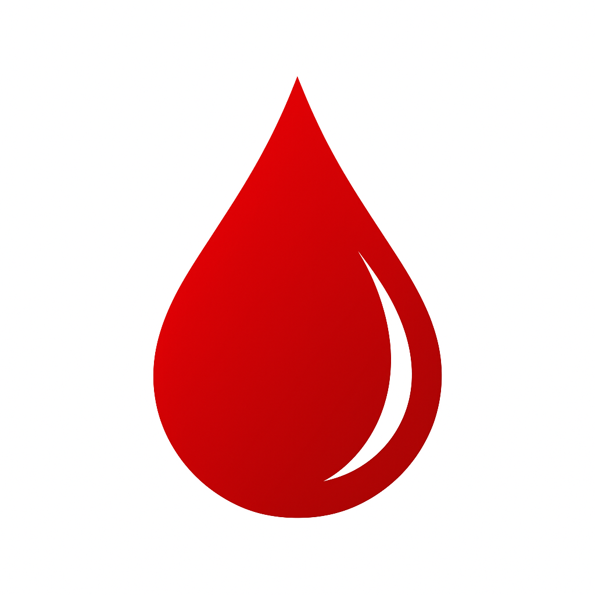

POLIKLINIKA & LABORATORI BIOENG
Menaxhimi i ndarë i raporteve klinike
Hyrje në sistem
Përdor llogarinë e laboratorit ose të specialistit.
Pacienti
Shto pacient të ri
Pagesat sipas raportit
Së pari ruaje raportin. Pastaj zgjidhe këtu, shëno vlerën totale dhe pagesën e bërë. Çdo pagesë lidhet vetëm me raportin e zgjedhur.
| Raporti | Vlera totale | Paguar | Mbetur | Statusi |
|---|---|---|---|---|
| Nuk ka pagesa për t’u shfaqur. | ||||
Shiko totalet javore, mujore dhe vjetore
Terminet
| Data / ora | Pacienti | Specialiteti | Statusi | Mjeku | Shënim |
|---|
Raport i ri
Çdo ruajtje krijon ose përditëson vetëm raportin e hapur. Raportet nuk bashkohen sipas datës.
Diagnoza
Ekzaminime të kërkuara
Shërbimet e Hixhames
Zgjidh shërbimet dhe detajet e kryera. Numri dhe pozitat ruhen në raport.
Hixhame — kupa
PozitatHirudoterapi — ushujza mjekësore
PozitatKëshilla për pacientin
Përgatit fletën, ruaje me “Printo / Ruaj si PDF”, pastaj bashkëngjite manualisht në WhatsApp.
Analizat laboratorike
Zgjidh kategorinë. Lista qëndron e hapur: kliko një analizë për ta shtuar, pastaj kliko analizën tjetër që të shtohet edhe ajo.
Shto analizë jashtë listës
| Parametri | Rezultati i fituar | Njësia | Vlera referente | Veprimi |
|---|
Pranohen PDF, PNG dhe JPG deri në 10 MB. Dokumenti ruhet i lidhur vetëm me këtë raport.
Raportet e pacientit
Për rezultatet e marra më vonë, kliko “Redakto”, vendos vlerat dhe ruaje raportin para printimit.
| Data / ora | Lloji | Specialiteti | Mjeku | Versioni | Veprimet |
|---|
Kopje rezervë
Ruaj kopje rezervë rregullisht në një vend të mbrojtur. Skedari mund të përmbajë të dhëna personale dhe mjekësore.